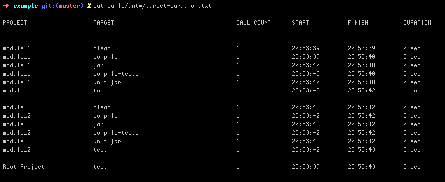
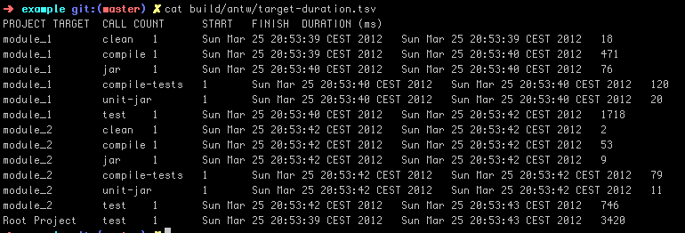
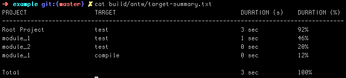
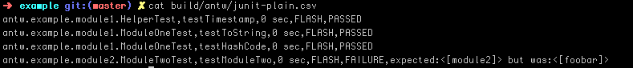
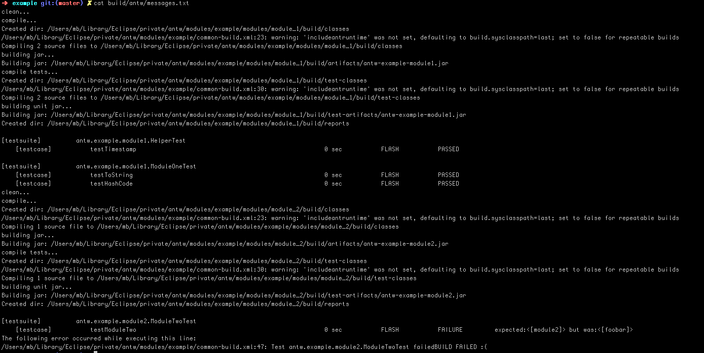
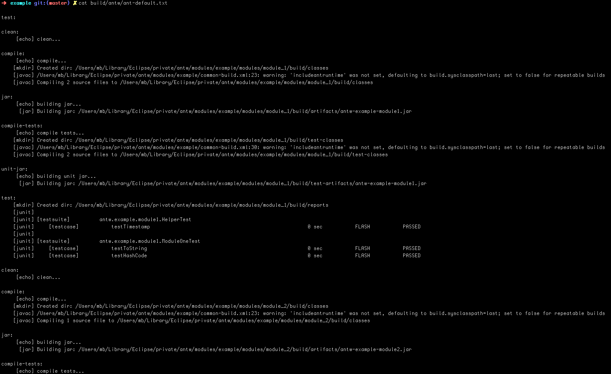

a wrapper for apache ant
Table Of Content
Antw is a wrapper for apache ant. Antw attach at runtime a bunch of loggers to log some helpful statistics about your build. All statistics are logged to a directory called antw located in your build directory (usually build/antw).
Antw will download and install apache ant version 1.8.3 for you under directory
~/.antw/install/contrib
It provides a script that use a set of loggers. All loggers log interesting statistics about your build. Not more.
You can install antw via curl or wget
via curl
curl -L https://raw.github.com/mbauhardt/antw/latest/src/main/scripts/antw-checkout.sh | sh
or via wget
wget --no-check-certificate https://raw.github.com/mbauhardt/antw/latest/src/main/scripts/antw-checkout.sh -O - | sh
This will install the antw sources under directory
~/.antw/source
And the binary under directory
~/.antw/install
After installation add the bin folder to your PATH
export PATH=$PATH:~/.antw/install/bin
Remove the directory .antw
rm -rf ~/.antw
The recommended way to use antw is to download/install the whole antw project, see above. There are two commands to use antw.
antw - executes apache ant with some special loggers
antw-update - update your antw installation
It is also recommended but optional to enable the antw junit formatter in your ant project when you use antw. Goto the download page
https://github.com/mbauhardt/antw/downloads
and download the antw-common.jar and the antw-junit.jar and add these jar files to your classpath. After that enable the formatter
<formatter classname="antw.junit.JUnitFormatter" usefile="false"/>
When you want to try the antw loggers without to install antw you can try to integrate the loggers manually to your ant build. Download the antw-common.jar and the antw-logger.jar and add these jar files to the cmd line when execute ant.
ant -lib antw-common-0.5.jar:antw-logger-0.5.jar -logger antw.logger.AntwLogger $@
You should see the same logging like when you use the antw app itself. But strongly recommended is to install the whole app.
The following loggers will attach at runtime to the ant process. We will demonstrate the different loggers with a small ant multiproject build that has two separately modules.
project
build.xml
modules
module_1
build.xml
module_2
build.xml
This project has a target test that depends on compile, compile-test, jar, unit-jar etc. There are two tests in module_1 they are passed. There are one test in module_2 that will fail.
This is the default logger. All log messages of the build process goes to standard out. The build is logged as a kind of a tree. The following screenshots shows also junit informations. these informations are logged with the antw junit formatter. see Optional

It exists two implementations that log target statistics about your ant build. A DurationLogger is logging a kind of table into a file called target_duration.txt.

The same informations, but only in a form of a csv file is logged into a file called target_duration.tsv. This file can be easily import into e.g. a excel based application to analyze these information.

This logger will log a summary about your build into a file called target-summary.txt. The table that is logged shows the project, the regarding target that is executed in this project and a duration in seconds and in percent. But you can not sum up all the seconds or the all the percentage of every module to get a 100% coverage. When a target depends on few other targets, then this target has a duration of the sum of all depending targets. Targets that are under 5% of the duration from the build will be excluded.

This logger log all tests (that is shown in the tree view as well) into a file called junit_plain.csv. This is a comma separated value file. Consisting of 6 columns
TestSuite, TestCase, DurationInSec, TestGroup, Status, TestFailureMessage
The test group are a kind of category based on the duration. It is currently a hardcoded value.
FLASH < FAST < ONE_MIN < THREE_MIN < SEVEN_MIN < UUH
1 sec < 10 sec < 1 min < 3 min < 7 min < ?

The MessageLogger will log all messages filtered by the log level to file messages.txt

The file ant-default.txt contains the messages from the ant default logger.
